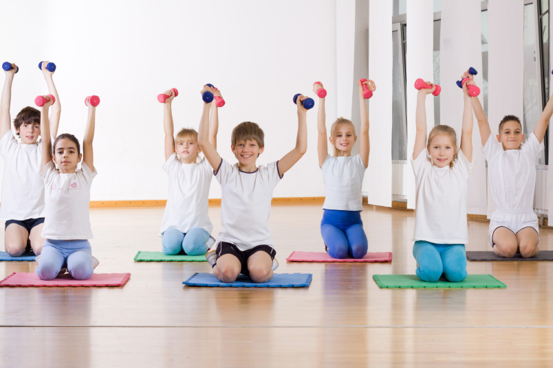
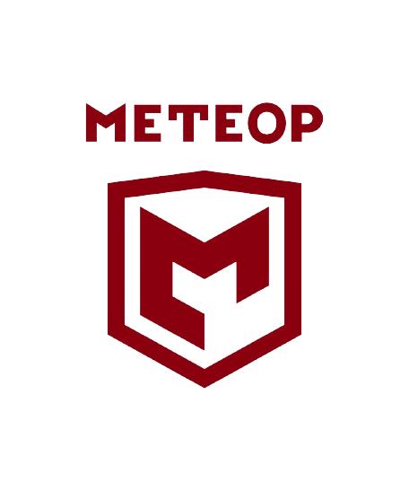
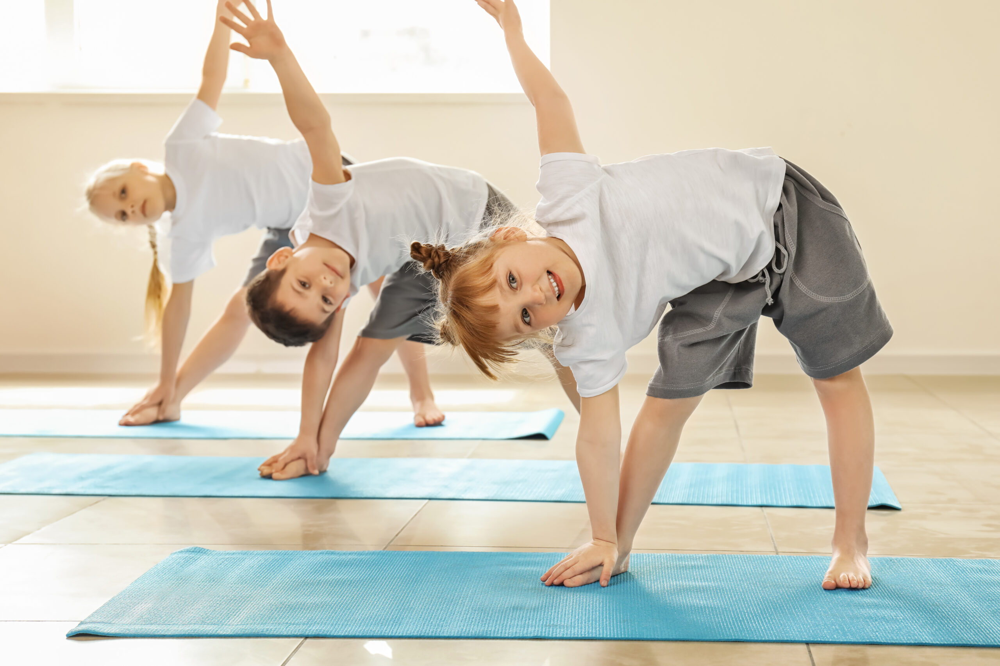
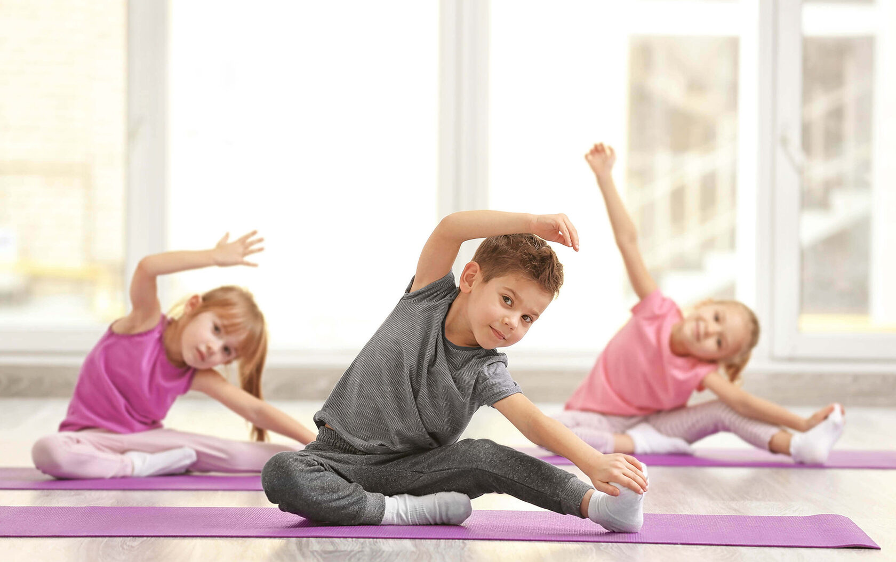
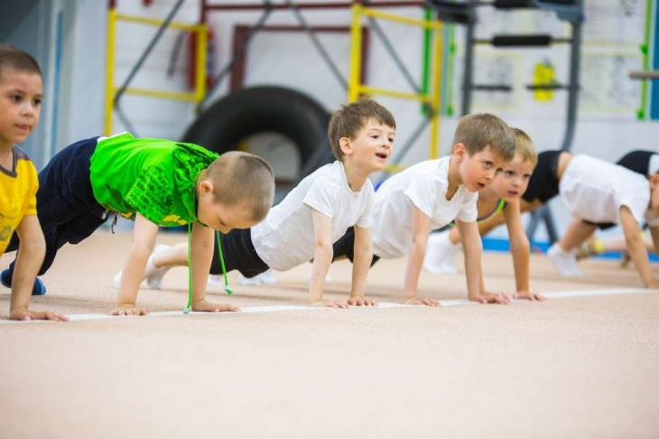
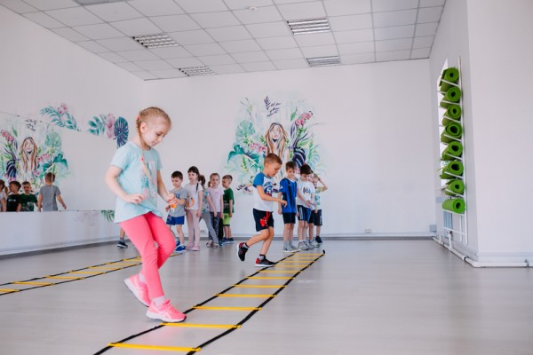

Программа активного движения для детей 3-12 лет
Метеор Fit
Движение. Энергия. Развитие.
Почему это важно
Детям нужно больше безопасного движения каждый день
Современные дети проводят большую часть дня сидя — за партой, планшетом или телевизором. Недостаток движения приводит к снижению выносливости, проблемам с осанкой и вниманием.

Решение
Занятия через игру, без давления и соревнований
MeteorFit создан для гармоничного физического развития детей. Мы развиваем тело, координацию и уверенность через простые игровые упражнения, понятные правила и доброжелательную дисциплину.
- Формирование правильной осанки и регулярной активности.
- Профилактика нарушений стопы: вальгус, плоскостопие.
- Развитие баланса, гибкости, силы, ловкости и внимания.
- В тёплое время года занятия можно проводить на свежем воздухе.

Возрастные группы
Программы по возрастам



3-4 года
Первые шаги движения
Приучить ребёнка к движению, развить интерес к активности и чувство уверенности в теле.
Структура занятия:
- Разминка — игровые движения («животные», «поймай мяч»).
- Основная часть — упражнения с мягким инвентарём, простые прыжки, бег по кругу.
- Заключение — спокойная игра, дыхание, растяжка.
Развитие координации, внимания, укрепление мышц спины и стопы, профилактика нарушений осанки и ранних проявлений вальгуса.
5-6 лет
Координация и ловкость
Укрепить тело, развить реакцию, чувство равновесия и уверенность в движении.
Структура занятия:
- Разминка — динамическая с элементами игры.
- Основная часть — эстафеты, простая полоса препятствий, упражнения на координацию.
- Заключение — командная игра и растяжка.
Укрепление осанки, мышц корпуса и ног, улучшение координации и профилактика вальгусных нарушений.
7-8 лет
Физическое развитие и командные навыки
Развивать силу, выносливость, командное взаимодействие и уверенность в движениях.
Структура занятия:
- Разминка — активная, с элементами ритма и скорости.
- Основная часть — упражнения на ловкость, баланс, простые игровые задания в командах.
- Заключение — растяжка и спокойная игра.
Укрепление мышц спины, корпуса и стоп, формирование правильной осанки, развитие уверенности и командного духа.
9-12 лет
Уверенность и сила в движении
Развить устойчивость, быстроту реакции и координацию движений, сформировать привычку к активности.
Структура занятия:
- Разминка — динамическая, с элементами координации.
- Основная часть — упражнения на выносливость, баланс, короткие игровые соревнования.
- Заключение — дыхательные упражнения и растяжка.
Укрепление спины и суставов, профилактика осаночных нарушений, развитие уверенности, выносливости и дисциплины.
Польза
Видимый результат для ребёнка и родителей
MeteorFit помогает ребёнку стать сильнее, внимательнее и увереннее в движении. Родители видят не просто тренировку, а понятный прогресс в теле, настроении и привычках.
Укрепляются мышцы спины, корпуса, стоп и ног.
Ребёнок лучше управляет телом, увереннее бегает, прыгает и держит баланс.
Игровые правила помогают слушать тренера, ждать очередь и работать в группе.
Мягкая нагрузка снижает риск плоскостопия, вальгуса и осаночных проблем.
Команда
Опытные тренеры клуба «Метеор»
Занятия проводят тренеры с опытом работы с детьми. Они понимают возрастную психологию, держат дисциплину через игру и работают по единым стандартам.
- План-конспект занятия и дозировка нагрузки.
- Техника безопасности и понятные правила.
- Фото, короткие видео и ежемесячный отчёт по согласованию.
- Связь с ответственным от школы и родителями через выбранный канал.
Для школ и детских садов
Готовая программа физического развития без лишней нагрузки на школу
Мы берём на себя методику, тренеров, структуру занятий и коммуникацию. Школа получает понятную активность для детей, которую можно встроить во внеурочную деятельность, секцию или дополнительное расписание.
Обсудить запускЧто получает площадка
Заявка